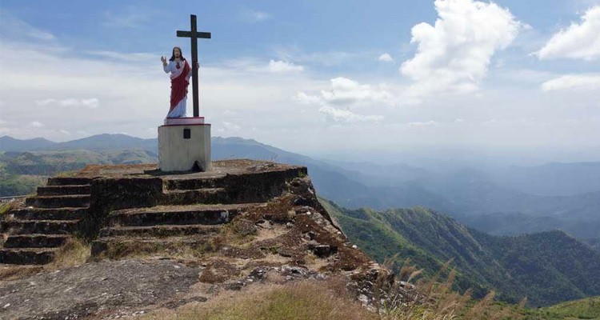

KOTTAYAM TOURISM ATTRACTIONS

Also konwn as the 'Akshara Nagari' or the 'City of Alphabets', Kottayam is one of the quaint and appealing cities in Kerala. A major trade destination in God's Own Country, the city boasts of its large production of spices, commercial crops and rubber. While the traditional values of Kottayam makes it an important destination to learn more about history and culture, its stunning range of tourist destination makes it for a delightful vacation.
Be it quaint villages, stunning waterfalls, alluring lakes, untouched forests or appealing meadows, there are many tourist places in Kottayam. Among the major tourist places in Kottayam, the Juma Masjid which is one of the oldest mosques in the country, Vennimala or the Hill of Victory, Matrumala Kallara and Ramapuram are the highest visited ones. Other names in this list include the scenic Vembanad Lake, Kumarakom, Aruvikkuzhi Waterfalls, Mudikal, Illickal Mala, Vegamon and other similar places.
Ilaveezhapoonchira

Vagamon

Aruvikkuzhi Waterfalls

Kurisumala
Kallara